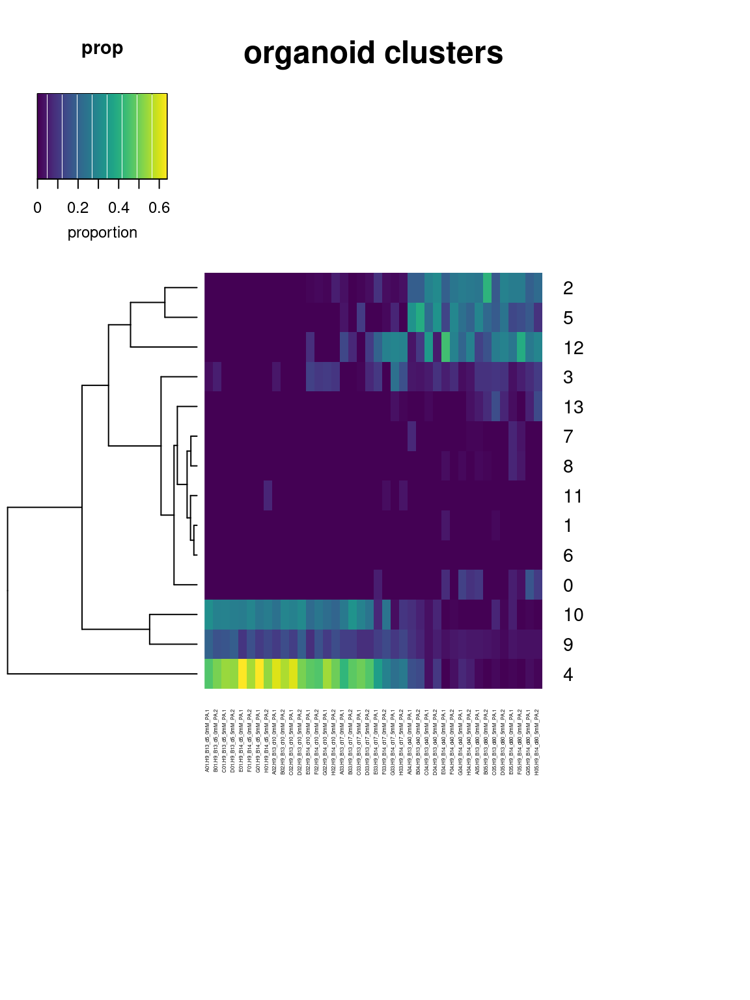

Deconvolution
A Chiocchetti
2024-01-11
Last updated: 2024-05-14
Checks: 7 0
Knit directory: files/
This reproducible R Markdown analysis was created with workflowr (version 1.7.1). The Checks tab describes the reproducibility checks that were applied when the results were created. The Past versions tab lists the development history.
Great! Since the R Markdown file has been committed to the Git repository, you know the exact version of the code that produced these results.
Great job! The global environment was empty. Objects defined in the global environment can affect the analysis in your R Markdown file in unknown ways. For reproduciblity it’s best to always run the code in an empty environment.
The command set.seed(20240103) was run prior to running
the code in the R Markdown file. Setting a seed ensures that any results
that rely on randomness, e.g. subsampling or permutations, are
reproducible.
Great job! Recording the operating system, R version, and package versions is critical for reproducibility.
Nice! There were no cached chunks for this analysis, so you can be confident that you successfully produced the results during this run.
Great job! Using relative paths to the files within your workflowr project makes it easier to run your code on other machines.
Great! You are using Git for version control. Tracking code development and connecting the code version to the results is critical for reproducibility.
The results in this page were generated with repository version e45d742. See the Past versions tab to see a history of the changes made to the R Markdown and HTML files.
Note that you need to be careful to ensure that all relevant files for
the analysis have been committed to Git prior to generating the results
(you can use wflow_publish or
wflow_git_commit). workflowr only checks the R Markdown
file, but you know if there are other scripts or data files that it
depends on. Below is the status of the Git repository when the results
were generated:
Ignored files:
Ignored: .Rhistory
Ignored: .Rprofile
Ignored: .Rproj.user/
Ignored: output/05_Bulk_Preprocessing/
Untracked files:
Untracked: .bashrc
Untracked: .nuvolos/
Untracked: ConsensusTOM-block.1.rda
Untracked: analysis/04b_GroupAnalysisMergedClusters_scRNA.Rmd
Untracked: analysis/08_GABA_subtypes.Rmd
Untracked: data/AstrocyteGenes.xlsx
Untracked: data/Bulk_dds_matrix.rds
Untracked: data/Bulkdata_Countmatrix.rds
Untracked: data/HumDev/
Untracked: data/Kanton/
Untracked: data/KantonGeneList/
Untracked: data/Knoblich/
Untracked: data/Kynurenine_genes.xlsx
Untracked: data/Kynurenine_genes_orig.xlsx
Untracked: data/QC_data.filt.rds
Untracked: data/QC_dataClustered.filt.rds
Untracked: data/QC_dataClustered.filtTyped.rds
Untracked: data/QC_dataClustered.filtTypedTraj.rds
Untracked: data/QC_dataFinal.rds
Untracked: data/Sample Allocation P2023-224-LEX-LB.txt
Untracked: data/SummarizedCellTypes.xlsx
Untracked: data/alldata.rds
Untracked: data/chr16p11.xlsx
Untracked: data/chr16p11_orig.xlsx
Untracked: data/tmp.xlsx
Untracked: output/04_Biostat/Biostat_DEG_Astcells.xlsx
Untracked: output/04_Biostat/Biostat_DEG_Ex_Ncells.xlsx
Untracked: output/04_Biostat/Biostat_DEG_Ex_Pcells.xlsx
Untracked: output/04_Biostat/Biostat_DEG_GO_ClusterMerged.xlsx
Untracked: output/04_Biostat/Biostat_DEG_GO_clustersMerged.svg
Untracked: output/04_Biostat/Biostat_DEG_In_Ncells.xlsx
Untracked: output/04_Biostat/Biostat_DEG_In_Pcells.xlsx
Untracked: output/04_Biostat/Biostat_DEG_MergedClusters_Astcells.xlsx
Untracked: output/04_Biostat/Biostat_DEG_MergedClusters_Ex_Ncells.xlsx
Untracked: output/04_Biostat/Biostat_DEG_MergedClusters_Ex_Pcells.xlsx
Untracked: output/04_Biostat/Biostat_DEG_MergedClusters_In_Ncells.xlsx
Untracked: output/04_Biostat/Biostat_DEG_MergedClusters_In_Pcells.xlsx
Untracked: output/04_Biostat/Biostat_DEG_MergedClusters_ccRGcells.xlsx
Untracked: output/04_Biostat/Biostat_DEG_MergedClusters_o_RGcells.xlsx
Untracked: output/04_Biostat/Biostat_DEG_ccRGcells.xlsx
Untracked: output/04_Biostat/Biostat_DEG_o_RGcells.xlsx
Untracked: output/04_Biostat/Biostat_clusterMergedFreq.xslsx
Untracked: output/06_Bulk_DEX/06_Bulk_DEX_Astrocytes_lineplots.svg
Untracked: output/06_Bulk_DEX/06_Bulk_DEX_Modules_BP_GOplot.svg
Untracked: output/06_Bulk_DEX/06_Bulk_DEX_Modules_GOplot.svg
Untracked: output/06_Bulk_DEX/06_Bulk_DEX_Modules_TF_GOplot.svg
Untracked: output/06_Bulk_DEX/06_Bulk_DEX_WGCNA_BP_GOplot.svg
Untracked: output/06_Bulk_DEX/06_Bulk_DEX_WGCNA_Dendrocolplot.svg
Untracked: output/06_Bulk_DEX/06_Bulk_DEX_WGCNA_GOplot.svg
Untracked: output/06_Bulk_DEX/06_Bulk_DEX_WGCNA_TF_GOplot.svg
Untracked: output/06_Bulk_DEX/06_Bulk_DEX_WGCNA_plots.svg
Untracked: output/06_Bulk_DEX/06_DEX_Bulk_WGCNA_GO_Terms.xlsx
Untracked: output/06_Bulk_DEX/06_DEX_Bulk_WGCNA_Stats.xlsx
Untracked: output/06_Bulk_DEX/06_DEX_WGCNA_labeled_Heatmap.svg
Untracked: output/06_Bulk_DEX/geneInfoSigned.csv
Untracked: output/06_Bulk_DEX/net.rds
Untracked: output/06_Bulk_DEX/powertable.rds
Untracked: output/07_Bulk_Deconv/07_DeconVol_Bulk_StatTimecourseDiff_KnCelltypes.xlsx
Untracked: output/07_Bulk_Deconv/07_DeconVol_Bulk_StatTimecourseDiff_clusters.xlsx
Untracked: output/07_Bulk_Deconv/07_DeconVol_Bulk_StatTimecourseDiff_clusters_merged.xslx
Untracked: output/07_Bulk_Deconv/07_DeconVol_Bulk_propHeatmap_clusters_merged.svg
Untracked: output/07_Bulk_Deconv/07_DeconVol_Bulk_timeplots_clusters_batchcompare.svg
Untracked: output/07_Bulk_Deconv/07_DeconVol_Bulk_timeplots_clusters_batchcompare_merged.svg
Untracked: output/07_Bulk_Deconv/07_DeconVol_Bulk_timeplots_clusters_batchinline.svg
Untracked: output/07_Bulk_Deconv/07_DeconVol_Bulk_timeplots_clusters_batchinline_merged.svg
Untracked: output/07_Bulk_Deconv/07_DeconVol_Bulk_timeplots_clusters_merged.svg
Untracked: output/Microglia_WGCNA_Dendrocolplot.svg
Untracked: output/WGCNA_labeled_Heatmap.svg
Untracked: output/geneInfoSigned.csv
Unstaged changes:
Modified: .gitignore
Modified: analysis/04_GroupAnalysis_scRNA.Rmd
Modified: analysis/index.Rmd
Modified: code/custom_functions.R
Modified: output/02_Clustering/Cluster_markers.xls
Modified: output/03_Trajectories/Trajectories_All.svg
Modified: output/03_Trajectories/Trajectories_Lineages.svg
Modified: output/04_Biostat/Biostat_DEG_GO_Cluster.xlsx
Modified: output/04_Biostat/Biostat_DEG_GO_clusters.svg
Modified: output/04_Biostat/Biostat_DEG_allcells.xlsx
Modified: output/04_Biostat/Biostat_DEG_cluster_0cells.xlsx
Modified: output/04_Biostat/Biostat_DEG_cluster_10cells.xlsx
Modified: output/04_Biostat/Biostat_DEG_cluster_11cells.xlsx
Modified: output/04_Biostat/Biostat_DEG_cluster_12cells.xlsx
Modified: output/04_Biostat/Biostat_DEG_cluster_13cells.xlsx
Modified: output/04_Biostat/Biostat_DEG_cluster_1cells.xlsx
Modified: output/04_Biostat/Biostat_DEG_cluster_2cells.xlsx
Modified: output/04_Biostat/Biostat_DEG_cluster_3cells.xlsx
Modified: output/04_Biostat/Biostat_DEG_cluster_4cells.xlsx
Modified: output/04_Biostat/Biostat_DEG_cluster_5cells.xlsx
Modified: output/04_Biostat/Biostat_DEG_cluster_6cells.xlsx
Modified: output/04_Biostat/Biostat_DEG_cluster_7cells.xlsx
Modified: output/04_Biostat/Biostat_DEG_cluster_8cells.xlsx
Modified: output/04_Biostat/Biostat_DEG_cluster_9cells.xlsx
Modified: output/04_Biostat/Biostat_GO_termDEG_all.xlsx
Modified: output/04_Biostat/Biostat_HumdevCTFreq.xslsx
Modified: output/04_Biostat/Biostat_clusterFreq.xslsx
Modified: output/06_Bulk_DEX/06_Bulk_DEX_Astrocyte_stat_DayxmM.xlsx
Modified: output/06_Bulk_DEX/06_Bulk_DEX_GO_results.xlsx
Modified: output/06_Bulk_DEX/06_Bulk_DEX_Kynurenine_lineplots.svg
Modified: output/06_Bulk_DEX/06_Bulk_DEX_Kynurenine_stat_DayxmM.xlsx
Modified: output/06_Bulk_DEX/06_Bulk_DEX_LFC_results.xlsx
Modified: output/06_Bulk_DEX/06_Bulk_DEX_Siggenes_boxplots.pdf
Modified: output/06_Bulk_DEX/06_Bulk_DEX_Siggenes_lineplots.svg
Modified: output/06_Bulk_DEX/06_Bulk_DEX_chr16p11_lineplots.svg
Modified: output/06_Bulk_DEX/06_Bulk_DEX_chr16p11_stat_DayxmM.xlsx
Modified: output/06_Bulk_DEX/06_Bulk_DEX_top10_BP_GOplot.svg
Modified: output/06_Bulk_DEX/06_Bulk_DEX_top10_TF_GOplot.svg
Modified: output/06_Bulk_DEX/06_Bulk_DEX_top10all_GOplot.svg
Deleted: output/06_Bulk_DEX/07_DeconVol_Bulk_propHeatmap_clusters.svg
Modified: output/07_Bulk_Deconv/07_DeconVol_Bulk_StatTimecourseDiff_KnCelltypes.xslx
Modified: output/07_Bulk_Deconv/07_DeconVol_Bulk_StatTimecourseDiff_clusters.xslx
Modified: output/07_Bulk_Deconv/07_DeconVol_Bulk_propHeatmap_Knoblichclusters.svg
Modified: output/07_Bulk_Deconv/07_DeconVol_Bulk_propHeatmap_clusters.svg
Modified: output/07_Bulk_Deconv/07_DeconVol_Bulk_timeplots_Knoblichclusters.svg
Modified: output/07_Bulk_Deconv/07_DeconVol_Bulk_timeplots_clusters.svg
Modified: workflowHelper.R
Note that any generated files, e.g. HTML, png, CSS, etc., are not included in this status report because it is ok for generated content to have uncommitted changes.
These are the previous versions of the repository in which changes were
made to the R Markdown (analysis/07_DeconVol_Bulk.Rmd) and
HTML (docs/07_DeconVol_Bulk.html) files. If you’ve
configured a remote Git repository (see ?wflow_git_remote),
click on the hyperlinks in the table below to view the files as they
were in that past version.
| File | Version | Author | Date | Message |
|---|---|---|---|---|
| Rmd | e45d742 | Andreas Chiocchetti | 2024-05-14 | wflow_publish("./analysis/07_DeconVol_Bulk.Rmd") |
| html | 8963c8b | Andreas Chiocchetti | 2024-02-12 | Build site. |
| html | 8bb408f | Andreas Chiocchetti | 2024-02-06 | Build site. |
| html | 4568fd1 | Andreas Chiocchetti | 2024-02-06 | Build site. |
| Rmd | 6d7e62f | Andreas Chiocchetti | 2024-02-06 | wflow_publish("./analysis/07_DeconVol_Bulk.Rmd") |
| html | 488f6d4 | Andreas Chiocchetti | 2024-01-18 | Build site. |
| Rmd | bdb9cc2 | Andreas Chiocchetti | 2024-01-18 | wflow_publish("./analysis/07_DeconVol_Bulk.Rmd") |
| html | 59bee55 | Andreas Chiocchetti | 2024-01-14 | Build site. |
| html | 603779a | Andreas Chiocchetti | 2024-01-13 | Build site. |
| html | 27e5187 | Andreas Chiocchetti | 2024-01-13 | Build site. |
| html | e02ebd0 | Andreas Chiocchetti | 2024-01-12 | Build site. |
| Rmd | fffce57 | Andreas Chiocchetti | 2024-01-12 | wflow_publish("./analysis/07_DeconVol_Bulk.Rmd") |
| html | 7fc08ed | Andreas Chiocchetti | 2024-01-12 | Build site. |
| Rmd | b7f110a | Andreas Chiocchetti | 2024-01-12 | wflow_publish("./analysis/07_DeconVol_Bulk.Rmd") |
| html | 472919f | Andreas Chiocchetti | 2024-01-12 | Build site. |
| Rmd | f7ee227 | Andreas Chiocchetti | 2024-01-11 | wflow_publish(c("./analysis/.Rmd", "./code/", "./docs/*")) |
proportion organoid clusters (our experiment)
longitudinal trajectories of proportions

testing time differences per cluster
Model: Proportion ~ Day x PamM, corrected for random Batch effects,including Main effects
cluster p.value D5 D10 D17
5 5 6.978461e-01 novar novar 0.241680735578263
9 9 6.731171e-01 0.768142321459835 0.645520313905799 0.016106426119855
8 8 1.907690e-06 novar novar novar
1 1 1.437609e-01 novar novar novar
0 0 4.445913e-01 novar novar 0.317292357193629
3 3 8.316851e-01 0.089054882524644 0.21725611873601 0.0212652773211934
4 4 7.929640e-01 0.5131576022917 0.671171683336468 0.556606077256481
7 7 6.764770e-02 novar novar 0.695108938330471
6 6 4.235562e-01 0.317292357194056 novar novar
2 2 1.373598e-02 0.317292357192823 0.466925300311176 0.333924479564087
12 12 7.872546e-01 novar 0.317292357193227 0.985993561303123
11 11 4.176788e-01 0.276123465925838 0.766800266147341 0.551156587774888
10 10 6.715678e-01 0.113181200880665 0.869458440712563 0.174680746565294
13 13 1.680899e-04 novar 0.317292357192453 0.117360551723711
D40 D80
5 0.43375445787929 0.403919819
9 0.184371767239057 0.046698646
8 0.765702348613602 0.002795336
1 0.317292357193639 0.341904908
0 0.153636471465858 0.597790250
3 0.839124092618713 0.043903885
4 0.611270967517041 0.519463934
7 0.392808060559521 0.046262744
6 novar 0.317292357
2 0.000136182813575676 0.067841746
12 0.997770569069611 0.434477645
11 novar 0.088487116
10 0.269521614554584 0.733318534
13 0.0542594631439053 0.021573014Heatmap proportions across sampels and clusters
Columns add up to 1 i.e. 100% of cells
png
2 
proportion knoblich cell types
longitudinal trajectories of proportions

testing time differences per cell type
cluster p.value D5 D10
LGE_IN LGE_IN no var novar novar
CGE_LGE_IN CGE_LGE_IN no var novar novar
L56 L56 0.815408940226298 novar novar
L23 L23 no var novar novar
L6_CThPN L6_CThPN 0.897144287178736 novar novar
RG RG no var novar novar
INP INP no var novar novar
ccvRG ccvRG 0.853894943639242 0.497048171711877 0.209971574426907
IP IP 0.441369354440442 novar novar
Astrocytes Astrocytes 0.4728533468887 0.390393549790597 0.385953435622409
CGE_IN CGE_IN 0.608897971533936 novar novar
ccRG ccRG 0.779146816931238 0.566956372265711 0.257242371288536
oRG oRG no var novar novar
vRG vRG no var novar novar
L4 L4 no var novar novar
mesenchyme mesenchyme 0.908702011907223 0.598962979912211 0.981365938212097
D17 D40 D80
LGE_IN novar novar novar
CGE_LGE_IN novar novar novar
L56 0.317292357192325 novar novar
L23 novar novar novar
L6_CThPN 0.1510813788258 0.915830969646569 0.792545494839691
RG novar novar novar
INP novar novar novar
ccvRG 0.393119188608934 0.552687841488945 0.279022145126459
IP 0.156274136730197 0.172786555246604 0.152341340198931
Astrocytes 0.769323667993211 0.300169407963808 0.000534831089281622
CGE_IN novar 0.766175138304353 0.390123397120774
ccRG 0.470953570898641 0.0757482453697097 0.567094655829515
oRG novar novar novar
vRG novar novar novar
L4 novar novar novar
mesenchyme 0.247185161928597 0.690272789205647 0.0644901157064368
Analyses with merged clusters
proportion organoid clusters (our experiment)
longitudinal trajectories of proportions

testing time differences per cluster
Model: Proportion ~ Day x PamM, corrected for random Batch effects,including Main effects
cluster p.value D5 D10
Ex_P Ex_P 1.798637e-01 novar novar
ccRG ccRG 2.947307e-01 0.0570252803323118 0.257683724028998
In_P In_P 1.763222e-05 novar novar
Ex_N Ex_N 4.778869e-02 novar 0.497260335307385
In_N In_N 4.670962e-01 novar 0.317292357193198
o_RG o_RG 3.877681e-01 0.0570252803323132 0.200650694766325
Ast Ast 7.222667e-01 novar 0.31729235719233
D17 D40 D80
Ex_P 0.0321974429516091 0.0614298427438355 0.832641671
ccRG 0.544141368075108 0.289421404773488 0.419343265
In_P novar 0.504668763170975 0.008063563
Ex_N 0.151786547894189 0.00540333120797238 0.107554732
In_N 0.796747660614371 0.598928775146033 0.023386368
o_RG 0.838028619551877 0.798791509303774 0.021023701
Ast novar novar 0.754396004Heatmap proportions across sampels and clusters
Columns add up to 1 i.e. 100% of cells
png
2
R version 4.3.1 (2023-06-16)
Platform: x86_64-pc-linux-gnu (64-bit)
Running under: Ubuntu 22.04.2 LTS
Matrix products: default
BLAS: /usr/lib/x86_64-linux-gnu/openblas-pthread/libblas.so.3
LAPACK: /usr/lib/x86_64-linux-gnu/openblas-pthread/libopenblasp-r0.3.20.so; LAPACK version 3.10.0
locale:
[1] LC_CTYPE=en_US.UTF-8 LC_NUMERIC=C
[3] LC_TIME=en_US.UTF-8 LC_COLLATE=en_US.UTF-8
[5] LC_MONETARY=en_US.UTF-8 LC_MESSAGES=en_US.UTF-8
[7] LC_PAPER=en_US.UTF-8 LC_NAME=C
[9] LC_ADDRESS=C LC_TELEPHONE=C
[11] LC_MEASUREMENT=en_US.UTF-8 LC_IDENTIFICATION=C
time zone: Etc/UTC
tzcode source: system (glibc)
attached base packages:
[1] stats4 stats graphics grDevices utils datasets methods
[8] base
other attached packages:
[1] lme4_1.1-35.2 Matrix_1.6-5
[3] DESeq2_1.40.2 pheatmap_1.0.12
[5] RColorBrewer_1.1-3 compareGroups_4.8.0
[7] kableExtra_1.4.0 ggstream_0.1.0
[9] MuSiC_1.0.0 TOAST_1.14.0
[11] quadprog_1.5-8 limma_3.56.2
[13] EpiDISH_2.16.0 nnls_1.5
[15] lubridate_1.9.3 forcats_1.0.0
[17] stringr_1.5.1 dplyr_1.1.4
[19] purrr_1.0.2 readr_2.1.5
[21] tidyr_1.3.1 tibble_3.2.1
[23] ggplot2_3.5.0 tidyverse_2.0.0
[25] gprofiler2_0.2.3 slingshot_2.8.0
[27] TrajectoryUtils_1.8.0 princurve_2.1.6
[29] Seurat_5.0.3 SeuratObject_5.0.1
[31] sp_2.1-3 DropletUtils_1.20.0
[33] SingleCellExperiment_1.24.0 SingleR_2.2.0
[35] SummarizedExperiment_1.32.0 Biobase_2.62.0
[37] GenomicRanges_1.54.1 GenomeInfoDb_1.38.1
[39] IRanges_2.36.0 S4Vectors_0.40.2
[41] BiocGenerics_0.48.1 MatrixGenerics_1.14.0
[43] matrixStats_1.3.0 workflowr_1.7.1
loaded via a namespace (and not attached):
[1] R.methodsS3_1.8.2 nnet_7.3-19
[3] locfdr_1.1-8 goftest_1.2-3
[5] HDF5Array_1.28.1 vctrs_0.6.5
[7] spatstat.random_3.2-3 digest_0.6.35
[9] png_0.1-8 corpcor_1.6.10
[11] shape_1.4.6.1 MCMCpack_1.7-0
[13] proxy_0.4-27 git2r_0.33.0
[15] ggrepel_0.9.5 httpcode_0.3.0
[17] deldir_2.0-4 parallelly_1.37.1
[19] fontLiberation_0.1.0 MASS_7.3-60.0.1
[21] reshape2_1.4.4 httpuv_1.6.15
[23] foreach_1.5.2 withr_3.0.0
[25] xfun_0.43 survival_3.5-8
[27] crul_1.4.2 MatrixModels_0.5-3
[29] systemfonts_1.0.6 gtools_3.9.5
[31] ragg_1.3.0 zoo_1.8-12
[33] pbapply_1.7-2 R.oo_1.26.0
[35] GGally_2.2.1 promises_1.3.0
[37] httr_1.4.7 globals_0.16.3
[39] fitdistrplus_1.1-11 rhdf5filters_1.12.1
[41] ps_1.7.6 rhdf5_2.44.0
[43] rstudioapi_0.16.0 pan_1.9
[45] miniUI_0.1.1.1 generics_0.1.3
[47] processx_3.8.4 curl_5.2.1
[49] zlibbioc_1.48.0 ScaledMatrix_1.8.1
[51] polyclip_1.10-6 GenomeInfoDbData_1.2.11
[53] SparseArray_1.2.2 xtable_1.8-4
[55] doParallel_1.0.17 evaluate_0.23
[57] S4Arrays_1.2.0 hms_1.1.3
[59] glmnet_4.1-8 irlba_2.3.5.1
[61] colorspace_2.1-0 ROCR_1.0-11
[63] reticulate_1.36.0 spatstat.data_3.0-4
[65] magrittr_2.0.3 lmtest_0.9-40
[67] viridis_0.6.5 later_1.3.2
[69] lattice_0.22-6 spatstat.geom_3.2-9
[71] future.apply_1.11.2 SparseM_1.81
[73] getPass_0.2-4 scattermore_1.2
[75] scuttle_1.10.3 cowplot_1.1.3
[77] RcppAnnoy_0.0.22 class_7.3-22
[79] pillar_1.9.0 nlme_3.1-164
[81] iterators_1.0.14 caTools_1.18.2
[83] compiler_4.3.1 beachmat_2.16.0
[85] RSpectra_0.16-1 stringi_1.8.3
[87] jomo_2.7-6 tensor_1.5
[89] minqa_1.2.6 plyr_1.8.9
[91] crayon_1.5.2 abind_1.4-5
[93] truncnorm_1.0-9 chron_2.3-61
[95] locfit_1.5-9.9 whisker_0.4.1
[97] codetools_0.2-20 textshaping_0.3.7
[99] BiocSingular_1.16.0 openssl_2.1.1
[101] flextable_0.9.5 bslib_0.7.0
[103] e1071_1.7-14 plotly_4.10.4
[105] mime_0.12 splines_4.3.1
[107] Rcpp_1.0.12 fastDummies_1.7.3
[109] quantreg_5.97 sparseMatrixStats_1.12.2
[111] knitr_1.46 utf8_1.2.4
[113] fs_1.6.3 listenv_0.9.1
[115] DelayedMatrixStats_1.22.6 callr_3.7.6
[117] tzdb_0.4.0 svglite_2.1.3
[119] pkgconfig_2.0.3 tools_4.3.1
[121] cachem_1.0.8 viridisLite_0.4.2
[123] fastmap_1.1.1 rmarkdown_2.26
[125] scales_1.3.0 grid_4.3.1
[127] ica_1.0-3 broom_1.0.5
[129] sass_0.4.9 officer_0.6.5
[131] patchwork_1.2.0 coda_0.19-4.1
[133] ggstats_0.6.0 dotCall64_1.1-1
[135] carData_3.0-5 RANN_2.6.1
[137] rpart_4.1.23 farver_2.1.1
[139] mgcv_1.9-1 yaml_2.3.8
[141] cli_3.6.2 writexl_1.5.0
[143] leiden_0.4.3.1 lifecycle_1.0.4
[145] askpass_1.2.0 uwot_0.2.1
[147] backports_1.4.1 BiocParallel_1.34.2
[149] timechange_0.3.0 gtable_0.3.4
[151] ggridges_0.5.6 progressr_0.14.0
[153] parallel_4.3.1 jsonlite_1.8.8
[155] edgeR_3.42.4 RcppHNSW_0.6.0
[157] mitml_0.4-5 bitops_1.0-7
[159] openxlsx2_1.5 Rtsne_0.17
[161] spatstat.utils_3.0-4 zip_2.3.1
[163] mice_3.16.0 highr_0.10
[165] jquerylib_0.1.4 dqrng_0.3.2
[167] R.utils_2.12.3 lazyeval_0.2.2
[169] shiny_1.8.1.1 htmltools_0.5.8.1
[171] sctransform_0.4.1 gfonts_0.2.0
[173] glue_1.7.0 spam_2.10-0
[175] XVector_0.42.0 gdtools_0.3.7
[177] RCurl_1.98-1.14 rprojroot_2.0.4
[179] mcmc_0.9-8 Rsolnp_1.16
[181] gridExtra_2.3 boot_1.3-30
[183] igraph_2.0.3 R6_2.5.1
[185] gplots_3.1.3.1 labeling_0.4.3
[187] cluster_2.1.6 Rhdf5lib_1.22.1
[189] nloptr_2.0.3 DelayedArray_0.28.0
[191] tidyselect_1.2.1 xml2_1.3.6
[193] car_3.1-2 fontBitstreamVera_0.1.1
[195] future_1.33.2 rsvd_1.0.5
[197] munsell_0.5.1 KernSmooth_2.23-22
[199] fontquiver_0.2.1 data.table_1.15.4
[201] htmlwidgets_1.6.4 rlang_1.1.3
[203] spatstat.sparse_3.0-3 spatstat.explore_3.2-7
[205] uuid_1.2-0 HardyWeinberg_1.7.8
[207] fansi_1.0.6